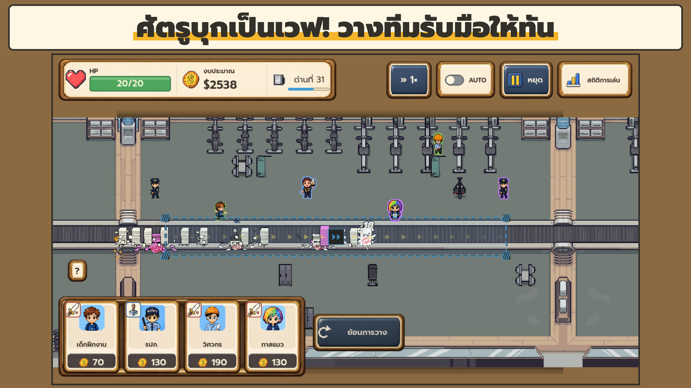
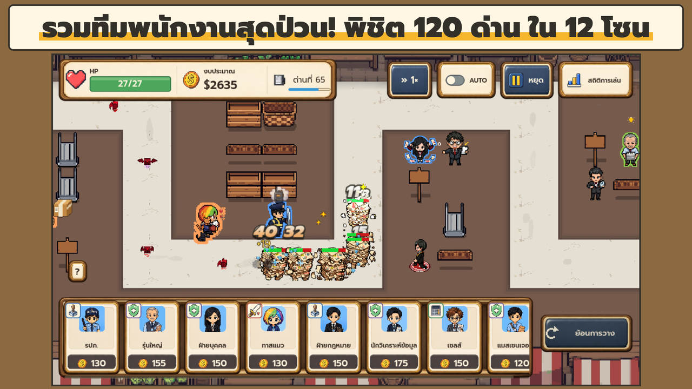
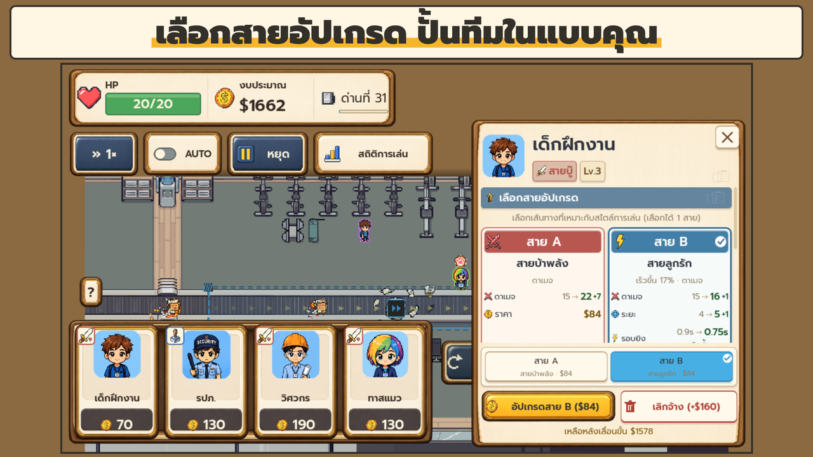
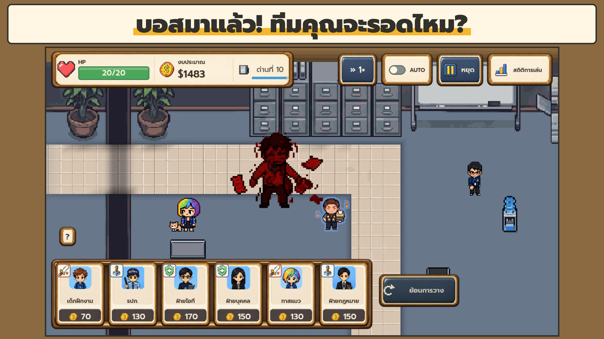
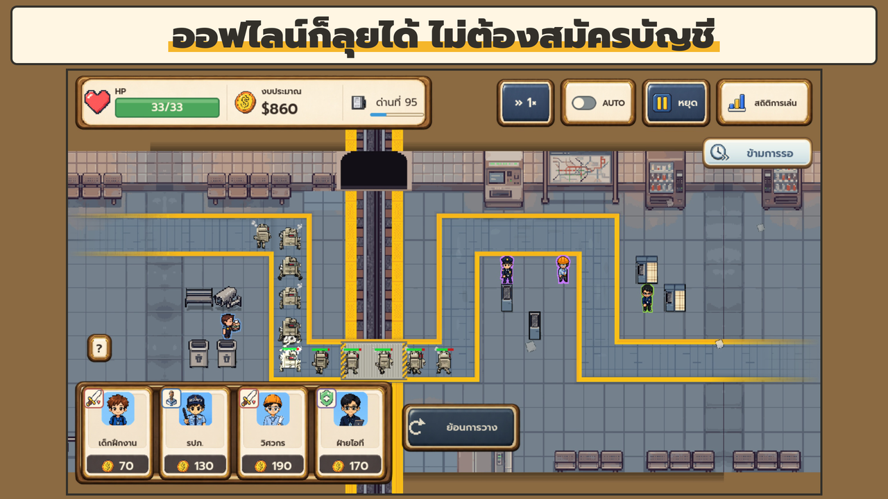

Office
SurvivalTower Defense
เลิกงานตรงเวลาไม่ใช่เรื่องง่าย… โดยเฉพาะวันที่ศัตรูบุกออฟฟิศ!
จัดทีมพนักงาน วางตำแหน่งตั้งรับศัตรู บริหารงบที่มีจำกัด และเอาตัวรอดจากการบุกแต่ละเวฟ
กำลังเตรียมเปิดให้เล่นทั่วไป การเข้าถึงบนร้านค้าอาจยังจำกัด

ANOTHER DAY AT THE OFFICE
ทีมพร้อม
งบพร้อม… ไหม?
เมื่อออฟฟิศกลายเป็นสนามรบ พนักงานธรรมดาจึงต้องลุกขึ้นมาปกป้องที่ทำงาน แค่มีพนักงานเก่งยังไม่พอ วางผิดตำแหน่งหรือใช้งบหมดเร็วไป ออฟฟิศอาจแตกก่อนถึงเวลาเลิกงาน
จัดทีมให้เข้าขา
เด็กฝึกงาน, HR, IT และ Security ต่างมีหน้าที่ของตัวเอง เลือกว่าจะให้ใครโจมตี ใครชะลอศัตรู และใครคอยสนับสนุน
ทุกบาทมีความหมาย
เลือกเส้นทางอัปเกรดและเป้าหมายการโจมตีให้เหมาะกับเวฟถัดไป พร้อมพัฒนาทาเลนต์และความชำนาญในระยะยาว
เปลี่ยนแผน รับมือเวฟใหม่
ดูศัตรูเวฟถัดไปก่อนเริ่ม รับมือบอส แล้วท้าทายตัวเองต่อใน Endless, Boss Rush และ Office Run ที่ปลดล็อกหลังด่าน 30
A LOOK INSIDE
ระหว่างเวลางาน
แตะภาพเพื่อดูขนาดใหญ่








เล่นในเวลาของคุณ
เล่นออฟไลน์ได้โดยไม่ต้องสมัครบัญชี มีบทแนะนำสำหรับผู้เล่นใหม่ ปรับขนาดตัวอักษรได้ และรองรับทั้งภาษาไทยและภาษาอังกฤษ
เรื่องโฆษณาและการซื้อ
เกมมีโฆษณาคั่นและโฆษณาที่เลือกดูเพื่อรับรางวัล แพ็ก Premium เป็นตัวเลือกสำหรับปิดโฆษณาคั่น ส่วนโฆษณาแลกรางวัลยังเลือกดูได้
SEE YOU AT THE OFFICE